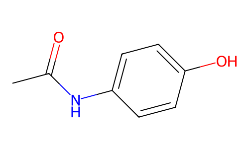
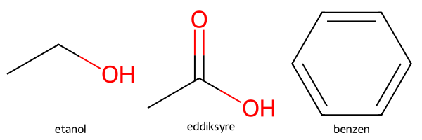
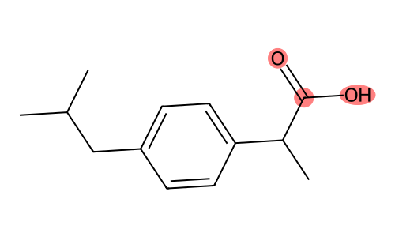

Molekylvisualisering#
Læringsutbytte
Etter å ha arbeidet med dette temaet, skal du kunne:
tegne ett eller flere små molekyler som strukturformler med
RDKitframheve bestemte atomer eller strukturmønstre i en molekyltegning
generere en mulig tredimensjonal konformasjon fra en SMILES-kode og forklare begrensningene ved modellen
tegne proteiner med
nglviewog velge ut bestemte deler av strukturenlegge på molekylflater og forklare hva overflaten representerer
visualisere en molekyldynamikksimulering som en animasjon
velge en representasjon som passer til det kjemiske spørsmålet
Så langt har vi i stor grad representert molekyler med tekst og tall, for eksempel SMILES-koder, molekylformler og beregnede egenskaper. Visualisering gir oss en annen type informasjon. Vi kan undersøke hvilke atomer som er bundet sammen, molekylform, funksjonelle grupper, aktive seter i enzymer og hvordan et biomolekyl beveger seg.
En visualisering er en modell som fremhever noen egenskaper og skjuler andre. En todimensjonal strukturformel viser bindinger og funksjonelle grupper tydelig, men sier lite om den romlige formen. En tredimensjonal modell viser formen, men kan gjøre bindingsorden og enkelte strukturdetaljer vanskeligere å se.
I dette kapitlet bruker vi to biblioteker med en tydelig arbeidsdeling:
RDKitbrukes til små molekyler: SMILES, strukturformler, strukturmønstre og generering av 3D-konformasjoner.nglviewbrukes til interaktiv tredimensjonal visning av molekyler, proteiner og simuleringer.
Installasjon#
Kjør kodecellen nedenfor én gang for å installere bibliotekene.
nglview er en widget. Det betyr at den interaktive figuren er koblet til en kjørende Python-kjerne, i stedet for å være et vanlig statisk bilde. I VS Code vises widgeten direkte i output-feltet under kodecellen.
Eldre veiledninger kan inneholde ekstra kommandoer for å aktivere nglview som en notebook-utvidelse. I nyere Jupyter-miljøer er dette vanligvis ikke nødvendig.
!pip install nglview rdkit mdtraj
Hvor kommer strukturene fra?#
Små og store molekyler representeres ofte på forskjellige måter:
Små molekyler kan skrives som SMILES. En SMILES-kode beskriver hvilke atomer som finnes og hvordan de er bundet sammen. Koden kan blant annet hentes fra PubChem, men i dette kapitlet bruker vi SMILES-kodene direkte.
Proteiner og nukleinsyrer hentes ofte fra Protein Data Bank. Hver struktur har en firetegns PDB-ID, for eksempel
1PSNeller4HHB.
Det er viktig å skille mellom de ulike modellene vi lager:
En 2D-tegning fra RDKit er en ryddig strukturformel laget ut fra bindingene i molekylet.
En 3D-konformasjon generert fra SMILES er en beregnet modell. RDKit lager koordinater og kan justere geometrien med et klassisk kraftfelt.
En PDB-struktur bygger vanligvis på røntgendiffraksjon, kryoelektronmikroskopi eller NMR og har en tilhørende eksperimentell usikkerhet.
Alle tre representasjonene kan være nyttige, men de svarer på forskjellige spørsmål.
Små molekyler med RDKit#
La oss først repetere litt om visualisering med RDKit fra forrige kapittel om kjemiske biblioteker.
Tegne en strukturformel#
Chem.MolFromSmiles leser en SMILES-kode og lager et molekylobjekt. Molekylobjektet inneholder informasjon om atomene, bindingene og bindingsordenen.
Draw.MolToImage bruker denne informasjonen til å lage en todimensjonal strukturformel. RDKit beregner selv hvor atomene skal plasseres på arket, slik at tegningen blir oversiktlig.
from rdkit import Chem
from rdkit.Chem import Draw
paracetamol = Chem.MolFromSmiles("CC(=O)NC1=CC=C(C=C1)O")
Draw.MolToImage(paracetamol, size=(500, 300))

Tegningen viser atomtyper, bindinger og bindingsorden. Karbon- og hydrogenatomer følger de vanlige konvensjonene for strukturformler:
Karbonatomer i kjeden og ringen er vanligvis ikke skrevet med bokstaven C.
Hydrogenatomer bundet til karbon er vanligvis utelatt.
Heteroatomer som O og N skrives eksplisitt.
Enkelt-, dobbelt- og aromatiske bindinger vises forskjellig.
Dette er en 2D-representasjon. Plasseringen av atomene på skjermen er valgt for å gjøre strukturen lett å lese. Tegningen er ikke en projeksjon av én bestemt tredimensjonal konformasjon.
Flere molekyler i samme figur#
Når vi skal sammenlikne flere molekyler, kan vi samle dem i ei liste og bruke Draw.MolsToGridImage. Funksjonen plasserer molekylene i et rutenett og kan skrive en merkelapp under hvert molekyl.
smiles = ["CCO", "CC(=O)O", "c1ccccc1"]
navn = ["etanol", "eddiksyre", "benzen"]
molekyler = []
for tekst in smiles:
molekyl = Chem.MolFromSmiles(tekst)
molekyler.append(molekyl)
Draw.MolsToGridImage(molekyler, legends=navn, molsPerRow=3)

Underveisoppgave: Les strukturformlene
Studer de tre strukturene ovenfor.
Hvilke bindinger og atomtyper er enklest å se i 2D-tegningene?
Hvor mange hydrogenatomer er utelatt i hver struktur?
Hvorfor tegnes benzen som en flat seksring, selv om SMILES-koden ikke inneholder koordinater?
Bytt ut én av SMILES-kodene med et molekyl du har arbeidet med tidligere, og forklar hvilke strukturelle trekk som blir tydelige i tegningen.
En 2D-tegning er særlig god når vi vil undersøke bindingsmønster, funksjonelle grupper og stereokjemi. Den er mindre egnet når spørsmålet handler om molekylets romlige form.
Framheve et strukturmønster#
RDKit kan framheve bestemte atomer i en strukturformel. Dette er nyttig når vi vil vise hvor en funksjonell gruppe eller et annet SMARTS-mønster finnes i molekylet.
Arbeidsflyten er:
lag molekylet fra SMILES
lag et søkemønster med
Chem.MolFromSmartsfinn atomene som passer med
GetSubstructMatchsend atomnumrene til
Draw.MolToImage
GetSubstructMatch returnerer en tuple med atomindekser. Indeksene forteller hvilke atomer i molekylobjektet som traff mønsteret.
ibuprofen = Chem.MolFromSmiles("CC(C)Cc1ccc(cc1)C(C)C(=O)O")
karboksylsyre = Chem.MolFromSmarts("C(=O)O")
treff = ibuprofen.GetSubstructMatch(karboksylsyre)
Draw.MolToImage(ibuprofen, highlightAtoms=treff, size=(500, 300))

De framhevede atomene utgjør karboksylsyregruppen. Bindingene mellom de markerte atomene blir også framhevet automatisk.
Underveisoppgave: Framhev en funksjonell gruppe
Tegn paracetamol og framhev amidgruppen med SMARTS-mønsteret
C(=O)N.Framhev hydroksylgruppen med mønsteret
[OX2H].Kontroller tegningen med kjemikunnskapen din. Treffer mønsteret akkurat de atomene du forventet?
Forklar hvorfor en framhevet strukturformel ofte er mer informativ enn bare å skrive antall treff.
Fra SMILES til en 3D-modell#
En SMILES-kode beskriver bindingene, men inneholder vanligvis ikke tredimensjonale koordinater. RDKit kan generere en mulig 3D-konformasjon i tre trinn:
Kode |
Hva som skjer |
|---|---|
|
legger til hydrogenatomene som er utelatt i SMILES |
|
lager tredimensjonale koordinater |
|
justerer geometrien med et klassisk kraftfelt |
RDKit lager selve molekylmodellen. For å rotere og undersøke den interaktivt bruker vi nglview, som kan vise et RDKit-molekyl direkte med nv.show_rdkit.
randomSeed=42 gjør at vi får samme startgeometri hver gang koden kjøres. Tallet har ingen kjemisk betydning; det gjør bare eksemplet reproduserbart.
from rdkit.Chem import AllChem
import nglview as nv
ibuprofen_3d = Chem.MolFromSmiles("CC(C)Cc1ccc(cc1)C(C)C(=O)O")
ibuprofen_3d = Chem.AddHs(ibuprofen_3d)
AllChem.EmbedMolecule(ibuprofen_3d, randomSeed=42)
AllChem.MMFFOptimizeMolecule(ibuprofen_3d)
visning = nv.show_rdkit(ibuprofen_3d)
visning.layout.width = "600px"
visning.layout.height = "400px"
visning
Underveisoppgave: 2D og 3D viser forskjellige ting
Sammenlikn 2D-tegningen og 3D-modellen av ibuprofen. Hvilke strukturtrekk er tydeligst i hver representasjon?
Kjør
EmbedMoleculemed tre forskjellige verdier forrandomSeed. Blir konformasjonene helt like?Prøv det samme med et fleksibelt molekyl med en lengre karbonkjede. Hvorfor blir forskjellene større?
Formuler i én setning hva
EmbedMoleculegir deg, og hva metoden ikke kan garantere.
Løsningsforslag
Strukturformelen viser bindingsorden, ringstruktur og funksjonelle grupper tydeligst. 3D-modellen viser molekylform, vinkler og rotasjon rundt enkeltbindinger tydeligst.
Konformasjonene kan bli noe forskjellige fordi metoden starter fra en delvis tilfeldig geometri. Et lite og forholdsvis stivt molekyl gir ofte lignende, men ikke nødvendigvis identiske, resultater.
Fleksible molekyler har flere roterbare enkeltbindinger og dermed flere mulige konformasjoner med forholdsvis lav energi.
EmbedMoleculegir én rimelig tredimensjonal konformasjon. Metoden garanterer ikke at dette er den mest stabile konformasjonen eller den eneste formen molekylet har i løsning.
Proteiner og simuleringer med nglview#
nglview gir omfattende kontroll over hvilke deler av en struktur som skal vises. En viktig funksjon er seleksjonsspråket, som brukes til å velge bestemte kjeder, aminosyrerester, ligander eller atomgrupper. Dette er særlig nyttig for proteiner.
Biblioteket er også utviklet for trajektorier, altså serier av strukturer som viser hvordan et system endrer seg over tid. Det egner seg derfor godt til molekyldynamikksimuleringer.
Vi begynner med pepsin, et enzym i magesekken som bryter proteiner ned til kortere polypeptider.
import nglview as nv
enzym = nv.show_pdbid("1PSN")
enzym
Legg merke til at den siste linjen bare inneholder variabelnavnet. Widgeten vises fordi objektet er den siste verdien i cellen, på samme måte som en dataframe kan vises uten print.
Seleksjonsspråket#
En seleksjon er en tekststreng som beskriver hvilke atomer eller rester som skal velges:
Seleksjon |
Betyr |
|---|---|
|
alle aminosyrerester |
|
vannmolekyler |
|
komponenter som ikke er protein eller nukleinsyre, for eksempel ligander, ioner og kofaktorer |
|
alle glysinrester |
|
alle aromatiske aminosyrerester |
|
rest nummer 1 til 50 |
|
kjede A |
|
ryggraden |
|
sidekjedene |
Vi kan legge en halvgjennomsiktig overflate på hele proteinet eller bare på utvalgte rester.
enzym_overflate = nv.show_pdbid("1PSN")
enzym_overflate.add_surface(selection="protein", opacity=0.3)
enzym_overflate
# Bare glysinrestene får overflate. Da ser du hvor de ligger i strukturen.
enzym_glysin = nv.show_pdbid("1PSN")
enzym_glysin.add_surface(selection="GLY", opacity=0.4, color="tomato")
enzym_glysin
Vi kan også vise bestemte sidekjeder som pinnemodeller oppå båndrepresentasjonen. Her fremhever vi tryptofanrestene, som har store aromatiske sidekjeder.
enzym_trp = nv.show_pdbid("1PSN")
enzym_trp.add_licorice("TRP") # TRP er tryptofan
enzym_trp.center(selection="TRP")
enzym_trp
Hold musepekeren over en rest for å se navnet og nummeret. Dette er nyttig når du utforsker en struktur du ikke kjenner fra før.
Bytte representasjon#
default_representation=False fjerner de eksisterende representasjonene. Deretter kan figuren bygges opp på nytt med ønskede utvalg og stiler.
enzym_kule_pinne = nv.show_pdbid("1PSN", default_representation=False)
enzym_kule_pinne.add_representation("ball+stick", selection="protein")
enzym_kule_pinne
Statiske bilder#
Den interaktive widgeten er nyttig til utforsking, men i en rapport eller presentasjon trenger vi ofte et statisk bilde. nglview kan rendre den aktuelle visningen som et bilde.
enzym_trp.render_image()
Vi kan deretter lagre bildet, enten med kommandoen nedenfor eller ved å høyreklikke og lagre.
enzym_trp.download_image("enzym.png", factor=4) # "factor" justerer oppløsning på bildet (her 4 ganger så høyoppløselig)
Visualisering av simuleringer#
Så langt har vi arbeidet med enkeltstrukturer. I en molekyldynamikksimulering (MD) beregnes bevegelsen til atomene over mange små tidssteg. Dette er ikke pensum, men kan være nyttig å kjenne til dersom du skal gjøre simuleringer seinere i studiet.
Resultatet lagres som en bane (trajectory): en serie strukturer som representerer systemet ved ulike tidspunkter. Baner kan blant annet brukes til å studere fleksibilitet, konformasjonsendringer og hvordan molekyler beveger seg i forhold til hverandre.
Her skal vi ikke kjøre selve simuleringen, men lese inn og visualisere en eksisterende banefil. Biblioteket nglview inneholder demofiler som kan brukes til dette.
For å lese banefiler trenger vi et bibliotek som støtter filformatet. To vanlige alternativer er mdtraj og MDAnalysis.
import nglview as nv
import mdtraj as md
trajectory = md.load(nv.datafiles.TRR, top=nv.datafiles.PDB)
animasjon = nv.show_mdtraj(trajectory, default_representation=False)
animasjon.add_representation("cartoon", selection="protein")
animasjon.layout.width = "600px"
animasjon.layout.height = "450px"
animasjon.center()
animasjon
Trykk på avspillingsknappen under figuren. Skyvefeltet lar deg gå til et bestemt tidssteg.
En trajektorie kan også leses med MDAnalysis:
import MDAnalysis as mda
from MDAnalysis.tests.datafiles import PSF, DCD
univers = mda.Universe(PSF, DCD)
protein = univers.select_atoms("protein")
animasjon = nv.show_mdanalysis(protein)
animasjon
Demodataene ligger i en egen pakke
MDAnalysis.tests.datafiles er ikke en del av MDAnalysis selv. Den ligger i pakken MDAnalysisTests, som du må installere separat med pip install MDAnalysisTests.
Dette er en klassisk snublestein. Feilmeldinga sier at modulen ikke finnes, og det er lett å tro at man har installert feil bibliotek.
Underveisoppgave: Se på bevegelsen
Kjør animasjonen ovenfor. Hvilke deler av strukturen beveger seg mest, og hvilke ligger nesten stille? Hva tror du forklarer forskjellen?
Legg på en overflate, og se animasjonen på nytt. Blir det lettere eller vanskeligere å se hva som skjer? Hva sier det om valg av representasjon?
Hvor mange rammer inneholder trajektorien? Bruk
len(trajektorie). Hvis hver ramme er lagret hvert 10. pikosekund, hvor lang tid dekker simuleringen?Sammenlikn den tiden med tiden det tar for et enzym å utføre en katalytisk syklus, som kan være fra mikrosekunder til millisekunder eller lengre. Hva er den praktiske konsekvensen av det forholdet for hva MD-simuleringer kan og ikke kan si noe om?
Arbeidsdeling mellom bibliotekene#
Vi trenger ikke to forskjellige biblioteker som gjør den samme jobben. I dette kapitlet har bibliotekene tydelige roller:
Bibliotek |
Brukes til |
|---|---|
|
lese SMILES, tegne 2D-strukturer, framheve strukturmønstre og generere 3D-konformasjoner |
|
interaktiv 3D-visning av RDKit-molekyler, PDB-strukturer og trajektorier |
|
lese og behandle filer fra molekyldynamikksimuleringer |
Dette gir en enkel arbeidsflyt:
Representer eller les strukturen med RDKit, PDB eller mdtraj.
Velg hva du ønsker å vise. Det kan være bindinger, et strukturmønster, en ligand, en overflate eller bevegelse.
Velg representasjon ut fra det kjemiske spørsmålet.
Kontroller hva figuren ikke viser. En strukturfigur viser ikke automatisk energi, ladningsfordeling eller hvilke konformasjoner som dominerer i løsning.
Sluttoppgaver#
Oppgave 1: Strukturformler med RDKit
Velg tre molekyler som illustrerer ulike bindingsforhold: ett med bare enkeltbindinger, ett med en dobbeltbinding og ett aromatisk molekyl.
Tegn alle tre i samme rutenett med
Draw.MolsToGridImage.Skriv navn under molekylene med argumentet
legends.Lag et SMARTS-mønster for én funksjonell gruppe og framhev treffet i minst ett av molekylene.
Forklar hvilke kjemiske trekk som blir tydelige i 2D-tegningene, og hva tegningene ikke forteller om molekylformen.
Oppgave 2: Et enzym og liganden
Velg et enzym fra PDB som er løst sammen med et substrat, en substratanalog eller en hemmer. Lysozym med en sukkerkjede (1HEW) er et godt utgangspunkt.
Vis proteinet som bånd og liganden som pinnemodell.
Bruk seleksjonsspråket i
nglviewtil å vise sidekjedene som ligger nær liganden.Legg på en halvgjennomsiktig overflate og vis at liganden ligger i en lomme.
Lag et statisk bilde og skriv en figurtekst som forklarer hva figuren viser.
Slå opp den katalytiske mekanismen og forklar hvilke av restene du ser som er involvert.
Oppgave 3: Fra SMILES til 3D
Velg et lite molekyl med minst tre roterbare enkeltbindinger.
Tegn først en 2D-strukturformel med RDKit.
Legg til hydrogenatomer og generer en 3D-konformasjon.
Vis konformasjonen med
nv.show_rdkit.Gjenta med tre forskjellige verdier for
randomSeed.Diskuter hvilke deler av molekylet som endrer form, og hvorfor én enkelt konformasjon ikke beskriver hele molekylets oppførsel i løsning.
Oppgave 4: Din egen figur til en rapport
Lag én figur som du kunne brukt i en labrapport eller presentasjon. Figuren skal:
vise et molekyl eller protein som er relevant for noe du har arbeidet med
bruke en representasjon som er valgt med en tydelig faglig begrunnelse
framheve minst én strukturdel som er viktig for tolkningen
lagres som et statisk bilde
Lever figuren sammen med en kort tekst der du begrunner valgene og sier tydelig hva figuren ikke viser.